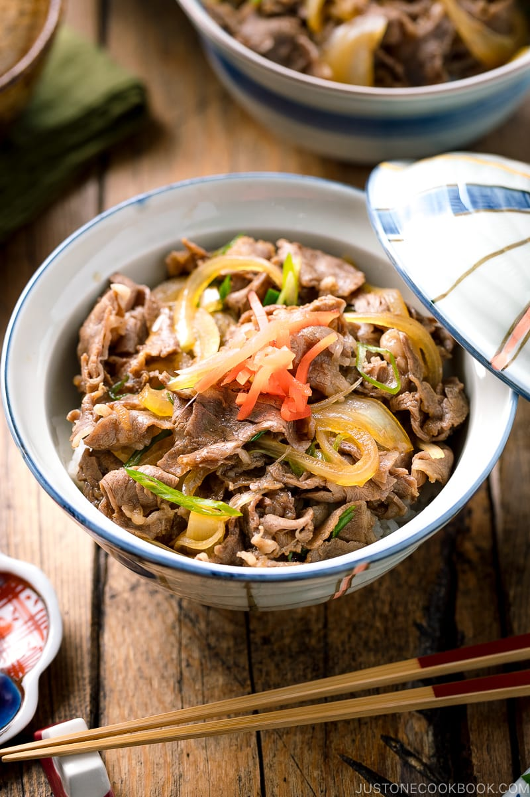

Gyudon Recipe

Thinly sliced beef with caramelized onions covered in a sweet
savory sauce, the Japanese Beef Gyudon is one of the most popular
cuisines in the world.
This simple recipe perfect for all levels of home-cooks delivers
a delicious, savory meal that has been in Japanese Cuisine for
over 100 years. The main ingredients needed include thinly sliced beef,
an onion, and a incredibly tasty sauce.
Ingredients
- Rib eye or chuck thinly sliced beef
- Half of an onion, sliced.
- Dashi soup stock, sake, mirin, soy sauce, and sugar
- Green onions
- Shichimi togarashi
Steps
- Cut the onion, green onions, and beef. Make sure the
beef is thinly sliced or the flavor will not saturate the meat.
- Put the sauce ingredients (soup stock, sake, mirin, soy sauce and sugar)
and beef in a large frying pan and place heat on medium.
- Simmer the beef and onion for 10 minutes
- Place the beef and onions on a bed of rice. Don't forget to pour the sauce.
Go Back